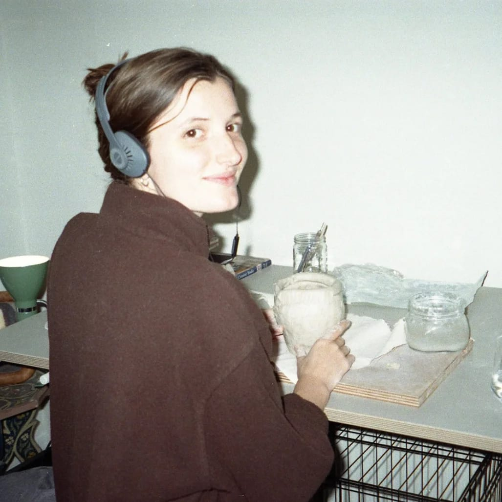

About me
I am a researcher interested in language and other aspects of human culture. I use an evolutionary approach, studying how culture develops in relation to the social environment in which it is situated. I use a variety of methods in my research: experiments with participants, data analysis and agent-based modeling. By understanding the context in which a culture develops, I think we can be more empathetic and appreciative of cultural diversity across the world.
Some examples of research questions I study are:
- How does creativity affect linguistic structure?
- How does social structure affect the amount of lexical variation in different sign languages?
- What cognitive mechanisms affect linguistic variation?
I am currently a postdoctoral associate at the Institute for Advanced Computational Science at Stony Brook University (USA) with Margaret Schedel and Mason Youngblood. Prior to this, I was a postdoctoral fellow at the University of Birmingham (UK) as part of the SignMorph project with Adam Schembri. Before that, I was a postdoctoral researcher at the Institute for Logic, Language and Computation at the University of Amsterdam (NL) with Marieke Schouwstra. I did my PhD at the AI lab of the Vrije Universiteit Brussel (BE) with Bart de Boer, Connie de Vos and Hannah Lutzenberger. If you'd like to read it, you can find my PhD thesis here.
 katherine [dot] mudd [at] stonybrook [dot] edu
katherine [dot] mudd [at] stonybrook [dot] edu